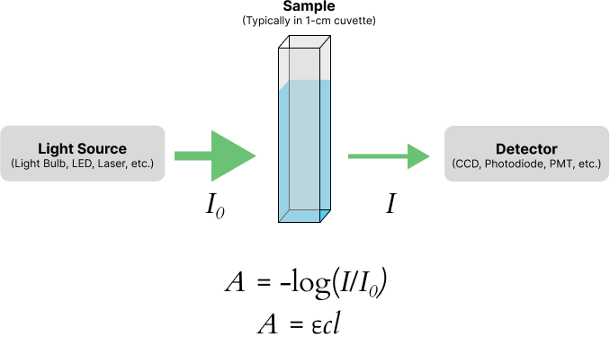

Phostphate Determination
Background
hosphate is a very significant pollutant to natural waters. Sources of phosphate pollution include detergents and fertilizers. In detergents, phosphate was used as a water softener. Although phosphate is not toxic to plants or animals, it is an important plant nutrient. In general, phosphate is the limiting nutrient for plants. High phosphate levels may stimulate excess growth of weeds and algae, causing rivers and lakes to be overrun with plants. This condition is called eutrophication. Phosphate compounds have been eliminated from some products (e.g., laundry detergents) to try to minimize man-induced eutrophication.
Spectrophometry is a commonly used method to determine aqueous anions. In this experiment, the amount of phosphate in natural water samples will be determined by the reaction of phosphate with molybdate to form molybdophosphoric acid, which in turn is reduced by stannous chloride to form molybdenum blue. This intense blue compound absorbs strongly at a wavelength of 650 nm, and will be used to quantify the phosphate.
Absorption Spectroscopy (Colorimetric Method)
The fundamentals of absorption spectrophotometry are shown below. A light source shines light through a sample cell (a cuvette) and onto a detection system, which serves to convert the light into an electric signal (Figure 1). The basic idea is that as the concentration of the colored complex increases in the cuvette, we would expect less light to be transmitted to the detection system. Hence, we are interested in the ratio of light intensity transmitted by the sample (\(I\)) to the incident light intensity (\(I_0\)), which is called the transmittance (\(T\)):

Standardization
A series of solutions is prepared with a known amount of analyte (standards) and the absorbance is measured on the Vernier SpectroVis. A graph is then prepared of absorbance (y-axis) versus concentration (x-axis). This graph is called a standard curve or calibration curve. The calibration curve will be used to develop a quantitative relationship between concentration and absorbance. Then absorbance will be measured for the water samples, and the graph will be used to calculate the concentration of analyte in the samples. A generalized example is shown below in Figure 2.

Hopefully, a straight line will be obtained for this graph. But because of indeterminate errors, rarely will all the points be exactly on a straight line. A statistical process called least squares analysis will be used to evaluate the best straight line. The mathematical details are not important, but basically the routine involves minimization of the distance between the points and the line. The result of the least square analysis will be: A = mc + b, where m is the slope of the line and b is the intercept.
Procedure
In this experiment, you will prepare a series of standard and sample solutions. After you have obtained a calibration relationship, you will determine the concentration of phosphate in your water sample and compare your results to class data.
Samples
Collect samples from a location of your choice for this experiment. Some options are:
Water fountain in ASB
Tap water from your home
Water from Cullowhee Creek
Water from the Tuckasegee River
Others are OK too
SpectroVis Setup
If you haven't already, download Vernier Spectral Analysis and install it on your computer.
Open the Spectral Analysis software and expand the Absorbance mode menu. From there, choose Absorbance vs. Concentration (Beer's Law).
Allow the lamp to automatically warm up for 90 seconds (do not skip).
When the 90 seconds has passed, insert a cuvette containing your blank (DI water) into the spectrometer and click Finish Calibration. (This step appears to set the integration time of the spectrophotometer – it does not actually calibrate it or measure the sample.)
After the previous step, a wizard will appear to choose the measurement wavelength. Place your high standard into the instrument and follow the on-screen instructions to choose the wavelength with the highest absorbance. Enter that wavelength into the "Selected Wavelength" box. If the wizard does not appear, click the settings icon in the top right of the software to access it.
Standard and Sample Preparation
The following reagents will be prepared for you:
A a 20-mg L\(^{-1}\) phosphate stock solution has been prepared for you.
Ammonium molybdate reagent
Stannous chloride reagent
Prepare a blank. This is 25 mL of DI water.
Prepare 5 standards using the stock phosphate solution. You should have the following approximate concentrations: 1, 2, 3, 4, and 5 mg/L phosphate. Make 25 mL of each solution, and remember that \(C_1V_1 = C_2V_2\).
⚠ NoteGlassware should be washed thoroughly with hot water followed by rinsing with distilled water. Do not use phosphate-containing detergents to clean equipment for this experiment!Dispense 25 mL of each standard, 3 replicates of each sample, and your blank into 9 clean 50-mL erlenmeyer flasks.
Add 1 mL of the ammonium molybdate reagent into each flask.
Add 2 drops of the stannous chloride reagent to each flask.
Mix each solution by swirling, and then let them sit for 5 minutes to allow color to develop.
⚠ NoteThe time period is somewhat critical. Measurements should be taken anywhere from 5 to 15 minutes after addition of stannous chloride.
Determination of Phosphate
After the designated time, use a plastic pipette to transfer some of each solution to a plastic cuvette and complete an abosrbance measurement. Follow the guidelines listed directly below!
Always work from lowest concentration to highest concentration to avoid cross-contamination!
Make sure to measure each standard once and each sample three times!
Make sure to rinse the cuvette 3 times with DI water between each measurement!
Make sure to record the instrument parameters (measurement wavelength) and your measurements in your notebook!
After measuring the absorbance of the standards, make a plot of absorbance versus concentration as described by your instructor using Excel. Add a trendline to your graph with the intercept set to zero and add the equation for the trendline and the \(R^2\) value to your graph. Label the \(x\)- and \(y\)-axes, including units for the concentration. Use the equation of the trendline to determine the phosphate concentration in the samples.
What to Turn In
Upload two copies (.jl and .html) of your completed notebook to the assignment for this experiment on Canvas.